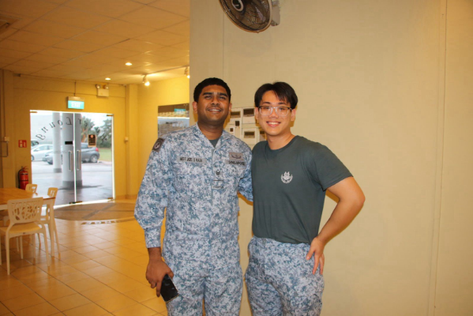

An aspiring business analyst passionate about building models that make an impact.
Model that predicts whether a message is 'Spam' or 'Ham' using the Naive Bayes model!
Using the K-Nearest Neighbour model, a prediction on a focus variable, in this case 'BMI' can be made!
A task tracker to help keep a tab on outstanding work for planning of work.
Bachelor of Business Analytics and Economics (double major)
GCE A-Levels
GCE O-Levels

I'm a current undergraduate of the National University of Singapore. My approach combines aesthetic sensibility with technical expertise to deliver solutions that are both beautiful and functional.
When I'm not coding, you can find me cafe-hopping or cooking! I believe in life-long learning and staying on top of the latest trends in technology.
My skills include: